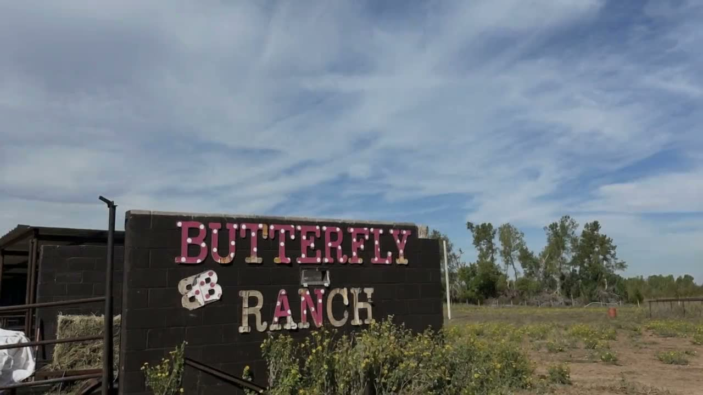
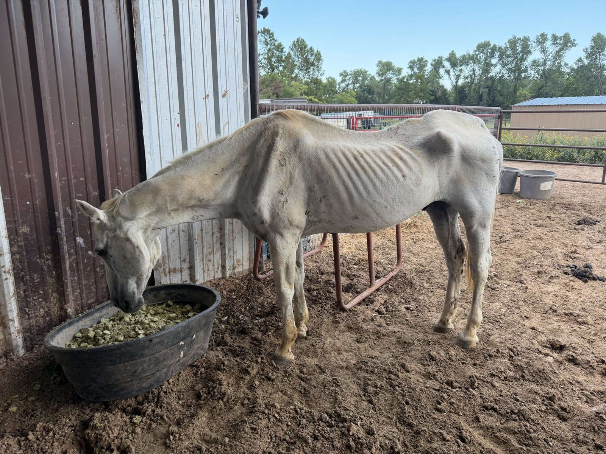
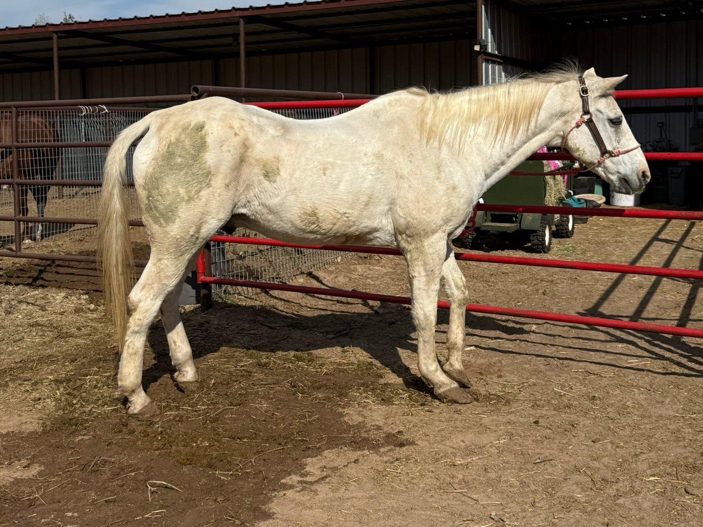

Every horse here has a story.
Every loving heart deserves to see it.
“Once she had a little bit of love and a little bit of time to realize that nobody was going to hurt her anymore, she was able to be put into the riding lessons.”
Ranch staff, on Dandelion
Give once, or a little every month
Every gift goes to hay, feed and care, and you'll hear back about the horse it helped.
$2,000 to $3,000 for the horses by January
The first goal the ranch has ever set: enough to stop paying for hay out of pocket this winter. The bar fills itself from every gift.
Giving opens when the ranch's donations go live. Until then the bar stays at zero rather than showing a made-up number.
Still needed
- MoneyFirst and foremost. Hay and feed are $9 a day for every horse.
- Hay and feedBales and bags, dropped off. Call first.
- Horse suppliesFly spray, wormer, hoof care, halters, lead ropes, brushes.
- Volunteer timeFeeding, grooming and barn days. Sign up
Every horse deserves a chance to heal
- 01
A new beginning
Every horse arrives with a story. Some have known neglect or abuse; others come from owners who can no longer care for them. Whatever the past, each horse is welcomed with compassion, patience and the promise of a brighter future.
- 02
Healing takes time
Recovery is about more than food and medical care. It's rebuilding trust, finding comfort and learning to feel safe again. With proper nutrition, vet care, gentle attention and plenty of patience, each horse heals at its own pace.
- 03
Be part of their story
Every small step forward is worth celebrating, and none of it happens alone. We share each horse's journey so supporters can see the difference their kindness makes. Every donation helps write a new chapter.
- 04
A home
When a horse is ready, Braxton finds it the right home. Some stay for good, like Rico.


The four horses in the rescue
Rescued from kill pens and hard homes, brought back to health, and every step shown.
See the whole ranch
261 photos from the class visit: the horses, the barn and the work.
Hear how the horses are doing
One email a month, with the horse you helped and what it cost. No more than that.